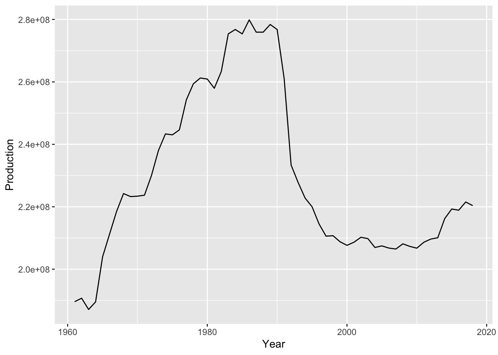

Code
library(tidyverse)
library(summarytools)
knitr::opts_chunk$set(echo = TRUE, warning=FALSE, message=FALSE)library(tidyverse)
library(summarytools)
knitr::opts_chunk$set(echo = TRUE, warning=FALSE, message=FALSE)# reading in FAO stat, dairy cattle and assigning to FAO_Dairy
FAO_Dairy <- read.csv("_data/FAOSTAT_cattle_dairy.csv")
head(FAO_Dairy) Domain.Code Domain Area.Code Area Element.Code Element
1 QL Livestock Primary 2 Afghanistan 5318 Milk Animals
2 QL Livestock Primary 2 Afghanistan 5420 Yield
3 QL Livestock Primary 2 Afghanistan 5510 Production
4 QL Livestock Primary 2 Afghanistan 5318 Milk Animals
5 QL Livestock Primary 2 Afghanistan 5420 Yield
6 QL Livestock Primary 2 Afghanistan 5510 Production
Item.Code Item Year.Code Year Unit Value Flag
1 882 Milk, whole fresh cow 1961 1961 Head 700000 F
2 882 Milk, whole fresh cow 1961 1961 hg/An 5000 Fc
3 882 Milk, whole fresh cow 1961 1961 tonnes 350000 F
4 882 Milk, whole fresh cow 1962 1962 Head 700000 F
5 882 Milk, whole fresh cow 1962 1962 hg/An 5000 Fc
6 882 Milk, whole fresh cow 1962 1962 tonnes 350000 F
Flag.Description
1 FAO estimate
2 Calculated data
3 FAO estimate
4 FAO estimate
5 Calculated data
6 FAO estimate# removing unchanging and duplicate variables
# turning Element into variables to remove duplicate observations
# renaming new variables to contain units
# assigning to FAO_Dairy_Clean
FAO_Dairy_Clean <- FAO_Dairy %>%
select('Area', 'Element', 'Year', 'Value') %>%
pivot_wider(names_from = 'Element', values_from = 'Value') %>%
rename('Milk Animals (heads)' = 'Milk Animals') %>%
rename('Yield (hg/AN)' = 'Yield') %>%
rename('Production (tonnes)' = 'Production')
head(FAO_Dairy_Clean)# A tibble: 6 × 5
Area Year `Milk Animals (heads)` `Yield (hg/AN)` `Production (tonnes)`
<chr> <int> <int> <int> <int>
1 Afghanistan 1961 700000 5000 350000
2 Afghanistan 1962 700000 5000 350000
3 Afghanistan 1963 780000 5128 400000
4 Afghanistan 1964 780000 5128 400000
5 Afghanistan 1965 870000 5172 450000
6 Afghanistan 1966 960000 5208 500000This data set appears to be describing dairy production - specifically, whole milk production - by area and year.
The earliest year is 1961 and the most recent year is 2018, though because the count of these years increases in the table below, this suggests that some countries either did not produce dairy or did not report data until later years.
There are 36,449 observations, but only 222 of those represent unique areas. Area is typically country, but also contains some broader regions including continents and even the entire world.
The original data set consists of 14 column names, but many of these variables are duplicates: For example, ‘Element’ and ‘Element.Code’ or ‘Year’ and ‘Year.Code’. In addition to duplicates, there are a few that remain the same for each observation. For example, ‘Domain’ is always ‘Livestock Primary’ and ‘Item’ is always ‘Milk, Whole fresh cow’. These suggest that the data comes from a larger dataset. For this analysis I removed these variables.
There are dublicate observations as well. This is because of the variables ‘Element’ and ‘Unit’. For each country and year, the number of cows, yield per cow and total milk production are listed as separate observations. For this analysis, I transformed the ‘Element’ variable into variables ‘Milk Animals’, ‘Yield’ and ‘Production’ and also included the units in each column name in order to get each obeservation onto its own row.
The median number of cows per year/area is 295,000. The median tonnes of production is year/area is 9,001,419.
# summarizing the original data set, viewing year and area in tables
dfSummary(FAO_Dairy)Data Frame Summary
FAO_Dairy
Dimensions: 36449 x 14
Duplicates: 0
----------------------------------------------------------------------------------------------------------------------------
No Variable Stats / Values Freqs (% of Valid) Graph Valid Missing
---- ------------------ -------------------------------- ----------------------- ---------------------- ---------- ---------
1 Domain.Code 1. QL 36449 (100.0%) IIIIIIIIIIIIIIIIIIII 36449 0
[character] (100.0%) (0.0%)
2 Domain 1. Livestock Primary 36449 (100.0%) IIIIIIIIIIIIIIIIIIII 36449 0
[character] (100.0%) (0.0%)
3 Area.Code Mean (sd) : 775.2 (1713.8) 232 distinct values : 36449 0
[integer] min < med < max: : (100.0%) (0.0%)
1 < 141 < 5504 :
IQR (CV) : 146 (2.2) :
: .
4 Area 1. Afghanistan 174 ( 0.5%) 36449 0
[character] 2. Africa 174 ( 0.5%) (100.0%) (0.0%)
3. Albania 174 ( 0.5%)
4. Algeria 174 ( 0.5%)
5. American Samoa 174 ( 0.5%)
6. Americas 174 ( 0.5%)
7. Angola 174 ( 0.5%)
8. Antigua and Barbuda 174 ( 0.5%)
9. Argentina 174 ( 0.5%)
10. Asia 174 ( 0.5%)
[ 222 others ] 34709 (95.2%) IIIIIIIIIIIIIIIIIII
5 Element.Code Mean (sd) : 5416 (78.5) 5318 : 12158 (33.4%) IIIIII 36449 0
[integer] min < med < max: 5420 : 12121 (33.3%) IIIIII (100.0%) (0.0%)
5318 < 5420 < 5510 5510 : 12170 (33.4%) IIIIII
IQR (CV) : 192 (0)
6 Element 1. Milk Animals 12158 (33.4%) IIIIII 36449 0
[character] 2. Production 12170 (33.4%) IIIIII (100.0%) (0.0%)
3. Yield 12121 (33.3%) IIIIII
7 Item.Code 1 distinct value 882 : 36449 (100.0%) IIIIIIIIIIIIIIIIIIII 36449 0
[integer] (100.0%) (0.0%)
8 Item 1. Milk, whole fresh cow 36449 (100.0%) IIIIIIIIIIIIIIIIIIII 36449 0
[character] (100.0%) (0.0%)
9 Year.Code Mean (sd) : 1990.4 (16.8) 58 distinct values . . . . : : : : 36449 0
[integer] min < med < max: : : : . : : : : : : (100.0%) (0.0%)
1961 < 1991 < 2018 : : : : : : : : : :
IQR (CV) : 29 (0) : : : : : : : : : :
: : : : : : : : : :
10 Year Mean (sd) : 1990.4 (16.8) 58 distinct values . . . . : : : : 36449 0
[integer] min < med < max: : : : . : : : : : : (100.0%) (0.0%)
1961 < 1991 < 2018 : : : : : : : : : :
IQR (CV) : 29 (0) : : : : : : : : : :
: : : : : : : : : :
11 Unit 1. Head 12158 (33.4%) IIIIII 36449 0
[character] 2. hg/An 12121 (33.3%) IIIIII (100.0%) (0.0%)
3. tonnes 12170 (33.4%) IIIIII
12 Value Mean (sd) : 4410235 (25744621) 24088 distinct values : 36375 74
[integer] min < med < max: : (99.8%) (0.2%)
7 < 43266 < 683217055 :
IQR (CV) : 692151 (5.8) :
:
13 Flag 1. (Empty string) 10044 (27.6%) IIIII 36449 0
[character] 2. * 810 ( 2.2%) (100.0%) (0.0%)
3. A 3070 ( 8.4%) I
4. F 7045 (19.3%) III
5. Fc 13136 (36.0%) IIIIIII
6. Im 2270 ( 6.2%) I
7. M 74 ( 0.2%)
14 Flag.Description 1. Aggregate, may include of 3070 ( 8.4%) I 36449 0
[character] 2. Calculated data 13136 (36.0%) IIIIIII (100.0%) (0.0%)
3. Data not available 74 ( 0.2%)
4. FAO data based on imputat 2270 ( 6.2%) I
5. FAO estimate 7045 (19.3%) III
6. Official data 10044 (27.6%) IIIII
7. Unofficial figure 810 ( 2.2%)
----------------------------------------------------------------------------------------------------------------------------table(select(FAO_Dairy, 'Year'))Year
1961 1962 1963 1964 1965 1966 1967 1968 1969 1970 1971 1972 1973 1974 1975 1976
594 594 594 594 594 594 594 594 594 594 594 594 594 594 594 594
1977 1978 1979 1980 1981 1982 1983 1984 1985 1986 1987 1988 1989 1990 1991 1992
594 594 594 594 594 594 594 594 594 594 594 594 594 594 600 657
1993 1994 1995 1996 1997 1998 1999 2000 2001 2002 2003 2004 2005 2006 2007 2008
663 664 664 664 664 664 665 666 666 666 666 666 666 669 671 669
2009 2010 2011 2012 2013 2014 2015 2016 2017 2018
671 669 669 672 672 674 674 674 672 672 table(select(FAO_Dairy, 'Area'))Area
Afghanistan
174
Africa
174
Albania
174
Algeria
174
American Samoa
174
Americas
174
Angola
174
Antigua and Barbuda
174
Argentina
174
Armenia
81
Asia
174
Australia
174
Australia and New Zealand
174
Austria
174
Azerbaijan
81
Bahamas
174
Bahrain
174
Bangladesh
174
Barbados
174
Belarus
81
Belgium
57
Belgium-Luxembourg
117
Belize
174
Benin
174
Bermuda
174
Bhutan
174
Bolivia (Plurinational State of)
174
Bosnia and Herzegovina
81
Botswana
174
Brazil
174
British Virgin Islands
52
Brunei Darussalam
76
Bulgaria
174
Burkina Faso
174
Burundi
174
Cabo Verde
174
Cambodia
174
Cameroon
174
Canada
174
Caribbean
174
Central African Republic
174
Central America
174
Central Asia
81
Chad
174
Chile
150
China, Hong Kong SAR
174
China, mainland
174
China, Taiwan Province of
174
Colombia
174
Comoros
174
Congo
174
Costa Rica
174
Côte d'Ivoire
174
Croatia
81
Cuba
174
Cyprus
174
Czechia
78
Czechoslovakia
96
Democratic People's Republic of Korea
174
Democratic Republic of the Congo
174
Denmark
174
Djibouti
174
Dominica
174
Dominican Republic
174
Eastern Africa
174
Eastern Asia
174
Eastern Europe
174
Ecuador
174
Egypt
174
El Salvador
174
Eritrea
78
Estonia
81
Eswatini
174
Ethiopia
78
Ethiopia PDR
96
Europe
174
Falkland Islands (Malvinas)
174
Fiji
174
Finland
174
France
174
French Guyana
174
French Polynesia
174
Gabon
174
Gambia
174
Georgia
81
Germany
174
Ghana
174
Greece
174
Grenada
174
Guadeloupe
174
Guatemala
174
Guinea
174
Guinea-Bissau
174
Guyana
174
Haiti
174
Honduras
174
Hungary
174
Iceland
174
India
174
Indonesia
174
Iran (Islamic Republic of)
174
Iraq
174
Ireland
174
Israel
174
Italy
174
Jamaica
174
Japan
174
Jordan
174
Kazakhstan
81
Kenya
174
Kuwait
174
Kyrgyzstan
81
Lao People's Democratic Republic
174
Latvia
81
Lebanon
174
Lesotho
174
Liberia
174
Libya
174
Liechtenstein
174
Lithuania
81
Luxembourg
57
Madagascar
174
Malawi
174
Malaysia
174
Mali
174
Malta
174
Martinique
174
Mauritania
174
Mauritius
174
Melanesia
174
Mexico
174
Middle Africa
174
Mongolia
174
Montenegro
39
Montserrat
174
Morocco
174
Mozambique
174
Myanmar
174
Namibia
174
Nepal
174
Netherlands
174
Netherlands Antilles (former)
174
New Caledonia
174
New Zealand
174
Nicaragua
174
Niger
174
Nigeria
174
Niue
174
North Macedonia
81
Northern Africa
174
Northern America
174
Northern Europe
174
Norway
174
Oceania
174
Oman
174
Pakistan
174
Palestine
81
Panama
174
Papua New Guinea
174
Paraguay
174
Peru
174
Philippines
174
Poland
174
Polynesia
174
Portugal
174
Puerto Rico
174
Qatar
174
Republic of Korea
174
Republic of Moldova
81
Réunion
174
Romania
174
Russian Federation
81
Rwanda
174
Saint Lucia
174
Saint Vincent and the Grenadines
174
Samoa
174
Sao Tome and Principe
174
Saudi Arabia
174
Senegal
174
Serbia
39
Serbia and Montenegro
42
Seychelles
174
Sierra Leone
174
Slovakia
78
Slovenia
81
Solomon Islands
174
Somalia
174
South Africa
174
South America
174
South Sudan
21
South-eastern Asia
174
Southern Africa
174
Southern Asia
174
Southern Europe
174
Spain
174
Sri Lanka
174
Sudan
21
Sudan (former)
153
Suriname
174
Sweden
174
Switzerland
174
Syrian Arab Republic
174
Tajikistan
81
Thailand
174
Togo
174
Tonga
174
Trinidad and Tobago
174
Tunisia
174
Turkey
174
Turkmenistan
81
Uganda
174
Ukraine
81
United Arab Emirates
174
United Kingdom of Great Britain and Northern Ireland
174
United Republic of Tanzania
174
United States of America
174
United States Virgin Islands
174
Uruguay
174
USSR
93
Uzbekistan
81
Vanuatu
174
Venezuela (Bolivarian Republic of)
174
Viet Nam
174
Wallis and Futuna Islands
174
Western Africa
174
Western Asia
174
Western Europe
174
World
174
Yemen
174
Yugoslav SFR
93
Zambia
174
Zimbabwe
174 #summarizing the clean data set
dfSummary(FAO_Dairy_Clean)Data Frame Summary
FAO_Dairy_Clean
Dimensions: 12170 x 5
Duplicates: 0
------------------------------------------------------------------------------------------------------------------------------
No Variable Stats / Values Freqs (% of Valid) Graph Valid Missing
---- ---------------------- -------------------------------- ---------------------- --------------------- ---------- ---------
1 Area 1. Afghanistan 58 ( 0.5%) 12170 0
[character] 2. Africa 58 ( 0.5%) (100.0%) (0.0%)
3. Albania 58 ( 0.5%)
4. Algeria 58 ( 0.5%)
5. American Samoa 58 ( 0.5%)
6. Americas 58 ( 0.5%)
7. Angola 58 ( 0.5%)
8. Antigua and Barbuda 58 ( 0.5%)
9. Argentina 58 ( 0.5%)
10. Asia 58 ( 0.5%)
[ 222 others ] 11590 (95.2%) IIIIIIIIIIIIIIIIIII
2 Year Mean (sd) : 1990.4 (16.8) 58 distinct values . . . . : : : : 12170 0
[integer] min < med < max: : : : . : : : : : : (100.0%) (0.0%)
1961 < 1991 < 2018 : : : : : : : : : :
IQR (CV) : 29 (0) : : : : : : : : : :
: : : : : : : : : :
3 Milk Animals (heads) Mean (sd) : 4205410 (18041595) 7915 distinct values : 12121 49
[integer] min < med < max: : (99.6%) (0.4%)
8 < 295000 < 276573845 :
IQR (CV) : 1525233 (4.3) :
:
4 Yield (hg/AN) Mean (sd) : 19329.1 (19361) 8365 distinct values : 12121 49
[integer] min < med < max: : (99.6%) (0.4%)
923 < 13218 < 134121 :
IQR (CV) : 21367 (1) : .
: : : . .
5 Production (tonnes) Mean (sd) : 9001419 (40268994) 9646 distinct values : 12133 37
[integer] min < med < max: : (99.7%) (0.3%)
7 < 295500 < 683217055 :
IQR (CV) : 2736860 (4.5) :
:
------------------------------------------------------------------------------------------------------------------------------# creating tables for 1961 and 2018 production
firstyear <- FAO_Dairy_Clean %>%
select('Area', 'Year', `Production (tonnes)`) %>%
filter(Year == "1961")
lastyear <- FAO_Dairy_Clean %>%
select('Area', 'Year', `Production (tonnes)`) %>%
filter(Year == "2018")
# calculating mean and median production for 1961 and 2018
median(firstyear$`Production (tonnes)`)[1] 100368median(lastyear$`Production (tonnes)`)[1] 602297.5# How did production increase over time in Asia vs Europe
# creating table of asian production
Asiaproduction <- FAO_Dairy_Clean %>%
select('Area', 'Year', `Production (tonnes)`) %>%
filter(Area == "Asia") %>%
rename('Production' = 'Production (tonnes)')
# mean and median of asian production over time
mean(Asiaproduction$Production)[1] 80628670median(Asiaproduction$Production)[1] 55479513# graphing asian milk production from 1961-2018
ggplot(data = Asiaproduction) +
geom_line(mapping = aes(x = Year, y = Production))
# creating table of european production
Europeproduction <- FAO_Dairy_Clean %>%
select('Area', 'Year', `Production (tonnes)`) %>%
filter(Area == "Europe") %>%
rename('Production' = 'Production (tonnes)')
# mean and median of asian production over time
mean(Europeproduction$Production)[1] 228904979median(Europeproduction$Production)[1] 220194403# graphing asian milk production from 1961-2018
ggplot(data = Europeproduction) +
geom_line(mapping = aes(x = Year, y = Production))
First, I wanted to take a look at how milk production compared in the first year of data (1961) vs the last year of data (2018) for all areas. We’ll focus on median production here, since mean would be skewed too heavily by the continent observations. The median production in 1961 for all areas was 100,368 tons. The median production in 2018 for all areas was 602,297 tons. As you can see, more milk is being produce per country in 2018.
Next, I wanted to compare two continents to see how their milk production compared. I looked at Asia and Europe. In Asia, the median production over all years was 55,479,513 tons. In Europe, the median production over all years was about 4 times higher, at 220,194,403 tons.
When we graph the results, things get more interesting. Asia had an exponential growth in milk production over time. Europe had steady growth in milk production from the early sixties until about 1990, when milk production plunged. This has only recovered slightly in recent years.